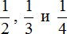
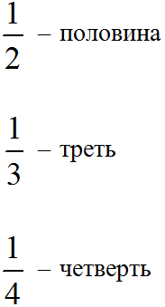
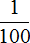
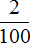
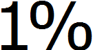
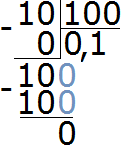
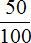
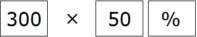
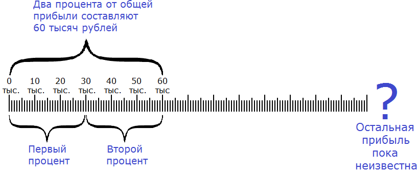
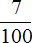

Процент это один из интересных и часто применяемых на практике инструментов. Проценты частично или полностью применяются в любой науке, на любой работе и даже в повседневном общении. Человек, хорошо разбирающийся в процентах, создаёт впечатление умного и образованного. В данном уроке мы узнаем, что такое процент и какие действия можно с ним выполнять.
Что такое процент?
В повседневной жизни дроби

встречаются наиболее часто. Они даже получили свои названия: половина, треть и четверть соответственно.
Но есть ещё одна дробь, которая тоже встречается часто. Это дробь  (одна сотая). Данная дробь получила название процент.
(одна сотая). Данная дробь получила название процент.
Дробь  означает, что нечто разделено на сто частей и от этих ста частей взята одна часть. Значит процентом является одна сотая часть.
означает, что нечто разделено на сто частей и от этих ста частей взята одна часть. Значит процентом является одна сотая часть.
Процентом является одна сотая часть
Например,

от одного метра составляет 1 см. Один метр разделили на сто частей, и взяли одну часть (вспоминаем, что 1 метр это 100 см). А одна часть из этих ста частей составляет 1 см. Значит один процент от одного метра составляет 1 см.
от одного метра уже составляет 2 сантиметра. В этот раз один метр разделили на сто частей и взяли оттуда не одну, а две части. А две части из ста составляют два сантиметра. Значит два процента от одного метра составляет 2 сантиметра.Еще пример, от одного рубля составляет одну копейку. Рубль разделили на сто частей, и взяли оттуда одну часть. А одна часть из этих ста частей составляет одну копейку. Значит один процент от одного рубля составляет одну копейку.
Проценты встречались настолько часто, что люди заменили дробь на специальный значок, который выглядит следующим образом:

Эта запись читается как «один процент». Она заменяет собой дробь . Также она заменяет собой десятичную дробь 0,01 потому что если перевести обычную дробь в десятичную дробь, то мы получим 0,01. Стало быть между этими тремя выражениями можно поставить знак равенства:
1% = = 0,01
Два процента в дробном виде будут записаны как , в виде десятичной дроби как 0,02 а с помощью специального значка два процента записывается как 2%.
2% = = 0,02
Как найти процент?
Принцип нахождения процента такой же, как и обычное нахождение дроби от числа. Чтобы найти процент от чего-либо, нужно это чего-либо разделить на 100 частей и полученное число умножить на нужный процент.
Например, найти 2% от 10 см.
Что означает запись 2% ? Запись 2% заменяет собой запись . Если перевести это задание на более понятый язык, то оно будет выглядеть следующим образом:
Найти от 10 см
А как решать подобные задания мы уже знаем. Это обычное нахождение дроби от числа. Чтобы найти дробь от числа, нужно это число разделить на знаменатель дроби, и полученный результат умножить на числитель дроби.
Итак, делим число 10 на знаменатель дроби

Получили 0,1. Теперь 0,1 умножаем на числитель дроби
0,1 × 2 = 0,2
Получили ответ 0,2. Значит 2% от 10 см составляет 0,2 см. А если перевести 0,2 сантиметра в миллиметры, то получим 2 миллиметра:
0,2 см = 2 мм
Значит 2% от 10 см составляют 2 мм.
Пример 2. Найти 50% от 300 рублей.
Чтобы найти 50% от 300 рублей, нужно эти 300 рублей разделить на 100, и полученный результат умножить на 50.
Итак, делим 300 рублей на 100
300 : 100 = 3
Теперь полученный результат умножаем на 50
3 × 50 = 150 руб.
Значит 50% от 300 рублей составляет 150 рублей.
Если на первых порах сложно привыкнуть к записи со значком %, можно заменять эту запись на обычную дробную запись.
Например, те же 50% можно заменить на запись

. Тогда задание будет выглядеть так: Найти300 : 100 = 3
3 × 50 = 150
В принципе, ничего сложного здесь нет. Если возникают сложности, советуем остановиться и заново изучить дроби и как их можно применять.
Пример 3. Швейная фабрика выпустила 1200 костюмов. Из них 32% составляют костюмы нового фасона. Сколько костюмов нового фасона выпустила фабрика?
Здесь нужно найти 32% от 1200. Найденное число будет ответом к задаче. Воспользуемся правилом нахождения процента. Разделим 1200 на 100 и полученный результат умножим на искомый процент, т.е. на 32
1200 : 100 = 12
12 × 32 = 384
Ответ: 384 костюмов нового фасона выпустила фабрика.
Второй способ нахождения процента
Второй способ нахождения процента намного проще и удобнее. Он заключается в том, что число от которого ищется процент сразу умножит на нужный процент, выраженный в виде десятичной дроби.
Например, решим предыдущую задачу этим способом. Найти 50% от 300 рублей.
Запись 50% заменяет собой запись  , а если перевести эти
, а если перевести эти  в десятичную дробь, то мы получим 0,5
в десятичную дробь, то мы получим 0,5
Теперь для нахождения 50% от 300, достаточно будет умножить число 300 на десятичную дробь 0,5
300 × 0,5 = 150
Кстати, по этому же принципу работает механизм нахождения процента на калькуляторах. Чтобы найти процент с помощью калькулятора, нужно ввести в калькулятор число от которого ищется процент, затем нажать клавишу умножения и ввести искомый процент. Затем нажать клавишу процента %

Нахождения числа по его проценту
Зная процент от числа, можно узнать всё число. Например, предприятие выплатило нам 60000 рублей за работу, и это составляет 2% от общей прибыли, полученной предприятием. Зная свою долю, и сколько процентов она составляет, мы можем узнать общую прибыль.
Сначала нужно узнать сколько рублей составляет один процент. Как это сделать? Попробуйте догадаться внимательно изучив следующий рисунок:

Если два процента от общей прибыли составляют 60 тысяч рублей, то нетрудно догадаться, что один процент составляет 30 тысяч рублей. А чтобы получить эти 30 тысяч рублей, нужно 60 тысяч разделить на 2
60 000 : 2 = 30 000
Мы нашли один процент от общей прибыли, т.е. . Если одна часть это 30 тысяч, то для определения ста частей, нужно 30 тысяч умножить на 100
30 000 × 100 = 3 000 000
Мы нашли общую прибыль. Она составляет три миллиона.
Попробуем сформировать правило нахождения числа по его проценту.
Чтобы найти число по его проценту, нужно известное число разделить на данный процент, и полученный результат умножить на 100.
Пример 2. Число 35 это 7% от какого-то неизвестного числа. Найти это неизвестное число.
Читаем первую часть правила:
Чтобы найти число по его проценту, нужно известное число разделить на данный процент
У нас известное число это 35, а данный процент это 7. Разделим 35 на 7
35 : 7 = 5
Читаем вторую часть правила:
и полученный результат умножить на 100
У нас полученный результат это число 5. Умножим 5 на 100
5 × 100 = 500
500 это неизвестное число, которое требовалось найти. Можно сделать проверку. Для этого находим 7% от 500. Если мы всё сделали правильно, то должны получить 35
500 : 100 = 5
5 × 7 = 35
Получили 35. Значит задача была решена правильно.
Принцип нахождения числа по его проценту такой же, как и обычное нахождение целого числа по его дроби. Если проценты на первых порах смущают и сбивают с толку, то запись с процентом можно заменять на дробную запись.
Например, предыдущая задача может быть изложена так: число 35 это

от какого-то неизвестного числа. Найти это неизвестное число. Как решать такие задачи мы уже знаем. Это нахождение числа по дроби. Для нахождения числа по дроби, мы это число делим на числитель дроби и полученный результат умножаем на знаменатель дроби. В нашем примере число 35 нужно разделить на 7 и полученный результат умножить на 10035 : 7 = 5
5 × 100 = 500
В будущем мы будем решать задачи на проценты, часть из которых будут сложными. Чтобы на первых порах не усложнять обучение, достаточно уметь находить процент от числа, и число по проценту.
Задания для самостоятельного решения
0,2 × 100 = 20
2 × 100 = 200